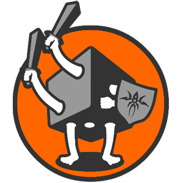
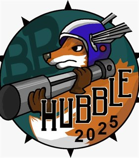

ABBA Amsterdam Blood Bowl Association
Amsterdam
Playing Blood Bowl among many other games under the hood of 6Shooters.
Every Dutch Blood Bowl league and organisation we know of, from Assen to Middelburg. Looking for a one-day event instead? Check the tournaments.
Listed in alphabetical order. Filter by name, city or format. Is yours missing or out of date? Tell us and we will fix it.
Click a diamond on the map, or a city below, to show only the leagues there.
Leagues without a fixed city, like the Dutch Open, are not on the map.
Playing Blood Bowl among many other games under the hood of 6Shooters.
Hosting leagues in Arnhem.
A tabletop Blood Bowl league based in Den Bosch.
A tabletop Blood Bowl league based in Leiden. Also organisers of the Ramstel Cup.
Hosting leagues of Blood Bowl in Hilversum.
Blood Bowl league located in Tilburg.

Organises tabletop wargaming events in the Netherlands.
Both the Dutch championship and an open tournament. Only Dutch players are eligible for the Dutch championship.
Hosting leagues and tournaments at Buurthuis Welgelegen, Leeuwarden.
Blood Bowl league in Rotterdam.

A private league hosted by and among colleagues from ESA.
A round robin format Blood Bowl Sevens league.
Welcomes anyone who wants to play Blood Bowl Sevens! Organises a yearly league and two tournaments.
Tabletop Blood Bowl league based in Amersfoort. Organisers of the Keistad Cup.
Coaches in The Hague playing a league together.
Rotterdam league and organisers of the Kabouter Cup.
Hosting leagues at 'De Kolonisten' in Turnhout, just across the border.
Blood Bowl Sevens league. Runs the 1st Tuesday of the month, 18:00-23:00. BB Club nights, open for games every Tuesday evening to catch up or play for fun.
Hosting Blood Bowl Sevens in Purmerend and the surrounding area.
Casual meet-ups at Orks and Dorks (Middelburg) and Bumblebeez (Bergen op Zoom). Monthly meet-ups in the library of Goes (Nerd Zaterdag) and a friendly WhatsApp group to meet casually otherwise.
No leagues match that filter. Know one we are missing?
Note: some leagues do not (yet) have a logo. If you are a league commissioner and want your league's details or logo added or changed, please contact the DBBA.